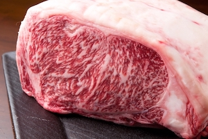
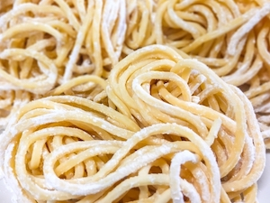
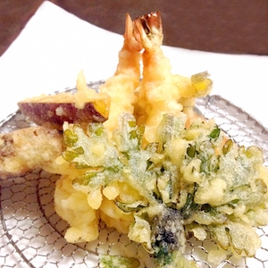

食彩
おいしさの宝庫とも呼ばれている糸島。
伝統の技を守り続けられた醤油、ハム・ウィンナーの加工品、農産物、海産物など、新鮮な食材があふれている。




Loading
糸島市は、２０１０年１月１日に旧前原市・旧志摩町・旧二丈町が合併し「糸島市」として誕生した。山あり海あり渓谷ありと、自然の遊園地であるかのような半島である。
２本のヤシの木を利用して作られたブランコや天使の羽、ロンドンバスカフェなど、インスタ映えするスポットがたくさん糸島にある。全てを写真に納めてインスタマスターになるのもよし、目に焼き付けてブルーアイズホワイトドラゴンになるもよし。
白糸の滝や芥屋海水浴場など、山と海を兼ね備えたいわゆる自然の遊園地である糸島。神様はこの半島に全てを与えてしまったのではないだろうか。人間共が唯一行ける神様の楽園だ。
糸島は神様が作ってしまった楽園だ。つまり、食材はなんでも揃ってやがる。僕ら人間が出入りしても良いのだろうか、いやだめだ。（訳：糸島は山と海を兼ね揃えており、どんな食材も手に入れることができる。）
糸島のあらゆるところに、インスタ映えスポットなどあらゆるオブジェクトが健在する。さらに、伝統的な手広げ陶芸などの工芸品も勢力を増している。昔、陶芸で５０cmを超えるオクラのレプリカを作った。それを陶芸と呼ぶのかどうかは知らない。
糸島にはあらゆる遺跡や歴史的建造物がある。
その中でも有名なのがここのページ背景であるこの遺跡「平原遺跡」
この遺跡は伊都国（魏志倭人伝などでみられる倭国の国の一つ）の王墓と考えられていて、
1965年に土地の地主がみかんの木を植える際に、多数の銅鏡の破片が見つかり、発見された。
穏やかな波が流れ、潮風が気持ちよく、美女たちを眺めながらBBQもできる、海。
マイナスイオンを体全体、毛穴全開で感じられる、ジブリのモデルとされそうな、山。
流しそうめんや、ヤマメの塩焼きなどが堪能できる、渓谷。様々な自然の恩恵を受けられる。自然の遊園地かつ美女の楽園だ。
おいしさの宝庫とも呼ばれている糸島。
伝統の技を守り続けられた醤油、ハム・ウィンナーの加工品、農産物、海産物など、新鮮な食材があふれている。
空を見上げて前向きな気持ちになって欲しい。
06/01/20 サプライズ花火in芥屋海岸

4.3
092-328-3938

4.1
092-326-5011

4.2
092-328-2056

4.0
092-328-2331
ページトップへ